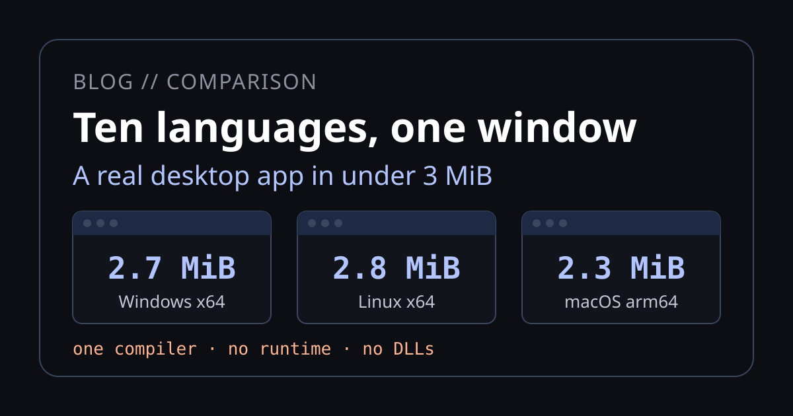

Ten languages, one window: what you install

Putting one window on screen on Windows, Linux and macOS takes very different amounts of software depending on the language. We read the official install guides for ten popular desktop languages and set them beside Neper. Neper wins on three things: one install builds programs for every desktop OS from a single machine, the user installs nothing to run them, and the window is 2.7 MiB with no runtime inside it.
Where Neper wins
One install, several targets
Windows, Linux and macOS executables, for x64 and arm64, came out of one Windows machine with one compiler and one command each. Most of the ten build each OS's package on that OS.
No second toolchain
The compiler writes the PE, ELF and Mach-O files itself, with its own linker. No SDK, no Visual Studio workload, no clang, no -dev packages, no IDE, no installer.
Nothing to install to run
No .NET or Java runtime, no VC++ redistributable, no Qt or GTK libraries, no bundled browser or interpreter. The program talks to the system directly.
Small, with everything in it
A window with the real renderer and widget runtime is 2.7 MiB on Windows and 2.8 MiB on Linux. Only code your program can reach is kept.
The scorecard
One row per stack. "C++ toolchain" means a C or C++ compiler or Visual Studio workload somewhere on the way to an executable. Details and sources for each language are further down.
| Stack | Install to build | C++ toolchain | User needs | Smallest app |
|---|---|---|---|---|
| Neper | The compiler, one file | No once, to bootstrap | Nothing | 2.7 MiB window, measured |
| C# / .NET | .NET 10 SDK, 206 MB | AOT only | .NET runtime, or self-contained | 18 to 65 MB |
| C++ / Qt | MSVC or MinGW; Xcode on macOS | Yes | VC++ runtime, Qt libraries | 42 to 50 MB |
| Java | JDK, 112 MB (+ WiX on Windows) | No | JRE, or a bundled one | runtime about 40 MB |
| Electron | Node.js | No | Nothing, ships Chromium | runtime 115 to 151 MB |
| Tauri | Rust, MSVC tools, WebView2 | Yes | System webview | 3 to 5 MB |
| Python | Python 3.15, PyInstaller | No | Nothing, bundled | 8 to 120 MB |
| Kotlin | JDK 17+, Gradle | No | Nothing, bundled | about 50 MB |
| Dart / Flutter | SDK 1.8 GB, Visual Studio C++ | Yes | VC++ runtime DLLs | about 25 MB |
| Rust | rustup, MSVC build tools | A linker | VC++ runtime, system GL | Tauri 3 to 5 MB |
| Go | Go 63 MB (+ MinGW for Fyne) | Fyne yes | System GL or webview | Wails 8 to 11 MB |
| Swift | Xcode 3.1 GB; VS parts on Windows | Windows yes | macOS: nothing | no sourced figure |
Sizes for the ten others are reported or documented, for different kinds of app. Only the Neper figure is ours.
How big is the smallest app?
Tauri's own documentation claims under 0.6 MB, without counting the system webview. Neper's number is the whole window stack: renderer and widget runtime included.
How we picked, and what we counted
No 2025 or 2026 survey measures which language people use for desktop. We took language usage from the Stack Overflow 2025 survey and desktop frameworks from its 2024 edition, the latest that asks: .NET 25.2%, Flutter 9.4%, Qt 7.3%, Electron 6.5%, SwiftUI 4.3%, Tauri 2.4%. Kotlin is the weakest pick, since Compose Multiplatform is not in that list. Delphi (2.5% usage) is the likely swap for someone ranking desktop only; we could not verify that, so we kept the list.
To build: what you install to get an executable, including a C++ workload or Xcode that the language's own installer does not cover. To run: what the user must have, or what the app must bundle. The smallest app: a hello window, when a source gives a number. Neper's numbers are ours; everyone else's are from official documentation, vendor download metadata, or third-party reports, which we mark "reported". We did not build a hello window in the other ten.
Each language in detail
Open a language for what it needs to build, what the user needs to run, and the sources behind the scorecard.
C# / .NET
- Frameworks: WinForms, WPF, WinUI 3 (Windows); Avalonia (all three); MAUI (no Linux).
- Build: .NET 10 SDK, 206 MB Windows, 229 MB Linux, 215 MB macOS (download sizes). Visual Studio is optional. Native AOT needs the C++ workload,
clangon Linux or Command Line Tools on macOS, and WPF and WinForms cannot use it because they cannot be trimmed. - Run: the .NET runtime (57 MB desktop installer on Windows) unless self-contained or AOT. WinUI adds the Windows App SDK runtime.
- Size: about 59 to 65 MB self-contained (a .NET 5 console app); about 18 MB for an Avalonia AOT template.
C++
- Frameworks: Qt 6.12, Win32/MFC, GTK, AppKit.
- Build: MSVC or MinGW-w64 on Windows;
build-essential libgl1-mesa-devon Linux; Qt requires full Xcode 16 on macOS. The online Qt installer wants a Qt account. - Run: the VC++ Redistributable unless linked with
/MT; Qt or GTK shared libraries and plugins, collected withwindeployqt. - Size: about 42 to 50 MB for a Qt app (Qt 5-era forum posts).
Java
- Frameworks: Swing (in the JDK), JavaFX 27.
- Build: JDK 25 or 27, 112 MB Windows, 136 MB Linux, 132 MB macOS. Packaging needs WiX on Windows and
fakerootorrpm-buildon Linux; each OS builds its own package. - Run: a JRE, unless jpackage bundles a trimmed one.
- Size: no sourced figure; a minimal jlink runtime is about 40 MB.
JavaScript / TypeScript (Electron, Tauri)
- Build: Electron needs Node.js. Tauri adds Rust, MSVC C++ Build Tools and WebView2 on Windows, nine
-devpackages includinglibwebkit2gtk-4.1-devon Linux, Command Line Tools on macOS. - Run: Electron: nothing, it ships Chromium and Node. Tauri: WebView2 on Windows (in Windows 11), WebKitGTK on Linux, the system webview on macOS.
- Size: Electron's runtime zip alone is 151 MB Windows, 118 MB Linux, 115 MB macOS (documented). Tauri: under 0.6 MB documented, 3 to 5 MB in a CI benchmark.
Python
- Frameworks: Tkinter, PyQt / PySide6.
- Build: Python 3.15; PyInstaller to package, on each OS. Tkinter is optional on Linux distributions (
python3-tk). - Run: nothing if PyInstaller bundles the interpreter.
- Size: Tkinter about 8 to 10 MB (a 2017 post); PyQt 30 to 120 MB.
Kotlin
- Frameworks: Compose Multiplatform 1.12.
- Build: JDK 17+ and Gradle; the plugin downloads WiX itself on Windows. Each OS builds its own package.
- Run: nothing; the package includes a trimmed runtime.
- Size: about 50 MB MSI, which a maintainer calls the baseline because Skia is large.
Dart / Flutter
- Build: SDK archive 1.8 GB Windows, 2.2 GB macOS, 1.5 GB Linux. Windows: Git and Visual Studio with the C++ workload. macOS: Xcode and CocoaPods. Linux:
clang cmake ninja-build pkg-config libgtk-3-dev. - Run: Windows: the VC++ runtime DLLs next to the exe. Linux: GTK 3.
- Size: about 25 MB on Windows.
Rust
- Frameworks: Tauri, egui, iced, Slint, gtk4-rs.
- Build: rustup, then MSVC v143 build tools and a Windows SDK (or the GNU target); a linker on Linux and macOS;
-devpackages for the GUI kit. - Run: the VC++ runtime unless built with
+crt-static; system GL libraries or webview. - Size: Tauri 3 to 5 MB; egui and iced no sourced figure.
Go
- Frameworks: Fyne 2.8, Wails 2.17.
- Build: Go, 63 to 67 MB. Fyne needs a C compiler (MSYS2 MinGW-w64, Xcode, or gcc plus Mesa/X11/Wayland headers). Wails needs Node and WebView2 on Windows.
- Run: one binary plus system GL (Fyne) or the system webview (Wails).
- Size: Wails about 8 to 11 MB; Fyne no sourced figure.
Swift
- Frameworks: SwiftUI, AppKit (macOS only); SwiftCrossUI. No first-party GUI on Windows or Linux.
- Build: Xcode 27 on macOS (3.1 GB in the App Store). Windows: Visual Studio 2022 components plus a 2.0 GB toolchain.
- Run: macOS: nothing, the runtime is part of the OS. Windows: the Swift runtime DLLs, ICU and the VC++ runtime.
- Size: no sourced figure.
Two signing facts apply to every language. Distributing a Mac app outside the App Store means notarization, which needs a Developer ID certificate and the $99-a-year Apple Developer Program. Windows signing is optional, but unsigned apps trigger warnings.
What the ten have in common
A C++ toolchain, often
Seven of the ten reach one on at least one OS: C++ itself, Flutter, Rust, Fyne, Swift on Windows, Tauri and .NET Native AOT. On Windows that means Visual Studio or its Build Tools, listed at 2.3 to 60 GB.
Weight moves elsewhere
.NET and Java need a runtime unless you bundle one. Electron bundles a browser. PyInstaller bundles an interpreter.
Build each OS on that OS
jpackage, PyInstaller, Compose and Tauri's MSI all build their packages natively. Cross-compiling a desktop app is the exception.
The IDE is rarely required
Every language builds from a command line. In practice, Xcode for Swift on macOS and Visual Studio as a toolchain for Flutter and C++ on Windows are the exceptions.
Neper
Neper's compiler writes the executable itself, including the PE, ELF and Mach-O headers, the linker and the ad-hoc macOS code signature, so a program does not go through a C++ compiler, an SDK or a system linker. The compiler is written in Neper. Getting the first compiler means building from source, and that is the one place a C toolchain appears:
$ scripts/build-selfhost.sh # Linux, macOS; scripts/build-selfhost.ps1 on Windows
# a throwaway C99 bootstrap (cl, or cc) builds the compiler once;
# the compiler then builds itself and prints its own pathAfter that the C compiler is not used again. We built the repository's smallest window program, ui_app (a 200 by 120 box, built with the real window, renderer and widget runtime), and a console hello, from one Windows machine with the self-hosted compiler:
$ neper-self emit-executable tests/selfhost/fixtures/link/ui_app/src/main.e . x64 windows hello-win.exe --release
$ neper-self emit-executable tests/selfhost/fixtures/link/ui_app/src/main.e . x64 linux hello-linux --release
$ neper-self emit-executable tests/selfhost/fixtures/link/ui_app/src/main.e . aarch64 macos hello-macos --release
$ neper-self emit-executable examples/hello.e . x64 windows h.exe --release # also: x64 linux, aarch64 linux, x64 macos, aarch64 macos| Program | Target | Size |
|---|---|---|
| ui_app (a window) | Windows x64 | 2.7 MiB |
| ui_app (a window) | Linux x64 | 2.8 MiB |
| ui_app (a window) | macOS arm64 | 2.3 MiB |
| hello (console) | Windows x64 | 12.3 KiB |
| hello (console) | Linux x64 / arm64 | 9.5 KiB / 11.4 KiB |
| hello (console) | macOS x64 / arm64 | 64.7 KiB each |
What that means for the build and the run:
- To build: the Neper compiler and a text editor. No SDK, no IDE, no installer download, and no second language's toolchain once you have the compiler.
- To run on Windows: Windows. The program calls the system's own window functions.
- To run on Linux: a display with an X11 socket. Neper speaks the X11 protocol itself, with no GTK or Qt. XWayland works; a Wayland-only session does not.
- To run on macOS: macOS. The program uses the Objective-C runtime, CoreFoundation and CoreGraphics that ship with the system.
The limits of those wins
- No Wayland. A Linux session without an X server cannot open a window.
window_openanswersUnsupported. - macOS builds from Windows, but we have not run those binaries on a Mac. The x64 and arm64 executables are real Mach-O files, ad-hoc signed by the compiler as Apple Silicon requires. The repository's runner checks (a
macos-14machine, x64 under Rosetta) cover the console and system-library side; the window program is built here but not confirmed on a Mac. There are no.appbundles, no Developer ID signing and no notarization, so a Mac app for other people still needs an Apple Developer account and a manual bundle step, in any language. - No packaging story yet. There is no MSI, DMG or deb builder, no installer, and no package-manager release of the compiler. Today you clone the repository and run the build script.
- Windows still needs a C toolchain once. The bootstrap builds with
cl, so the first compiler on Windows needs the MSVC build tools. This is the same prerequisite as Rust, Flutter and C++ have, paid once instead of per project. - No designer, and a young ecosystem. There is no visual designer, no third-party control market and no Stack Overflow answer history. Every library in the box is Neper's own.
- This is not a like-for-like size test. The other ten rows are sourced reports of different app shapes (a console app, a template, a forum post). Only the Neper rows are ours. Build the same hello window in each language and measure it before quoting any ratio.
Targets we plan next
What exists today is Windows, Linux and macOS on x64 and arm64. These are planned, and none of them exists yet:
Android
On x86_64 and AArch64, as a distinct target and not an alias for Linux. The aim is to write the APK itself (binary manifest, aligned native library, signature) with no Android Studio, SDK, NDK, Gradle or Java.
iOS
First step: compile to arm64 iOS Mach-O objects on Windows. The final link, app bundle, signing and upload stay in Apple's toolchain, because iOS has no unsigned path. So "nothing to install" would hold for compiling, not for the App Store. The language specification currently excludes iOS.
WebAssembly
Today Neper can run WebAssembly: e.wasm is an interpreter for the 2.0 core format. Compiling Neper programs to WebAssembly is a goal with no design document yet.
FreeBSD is evaluated as a candidate and not scheduled. Each of these is a distinct target with its own binary rules, not a relabelled Linux or macOS build, and we will report them here as we measure them, not before.
Sources
- Language and framework usage: Stack Overflow 2025 and 2024; JetBrains .NET 2025.
- .NET: downloads, Native AOT, MAUI platforms, Visual Studio 2026 requirements.
- C++: Qt on Windows, Qt on macOS, Qt deployment, VC++ redistributables.
- Java and Kotlin: jpackage, Compose distribution.
- Web stacks: Tauri prerequisites, Tauri Windows installer, Electron 45 assets, framework size benchmark.
- Others: PyInstaller, Flutter on Windows, Flutter on Linux, rustup on Windows, Fyne, Swift on Windows, Apple Developer Program.
- Neper's X11 and macOS window code:
lib/e/os.linux.e,lib/e/os.macos.e; the Mach-O linker and its ad-hoc signature:src/link_macho.e; the build scripts:scripts/build-selfhost.*.
Versions and sizes were read on October 23, 2026 and drift. If a cell here is wrong or out of date, we want to know.